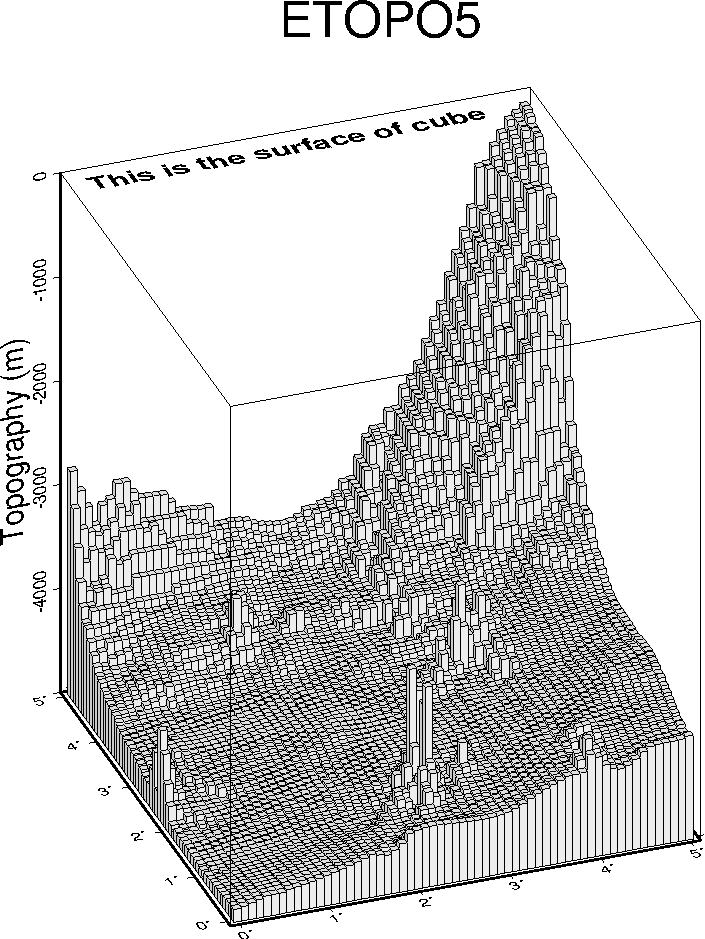

Example 8. GMT contains a variety of plot options. Here, we see a 3-D column
plot where each data value (x,y,z) is represented by a column of height z. The
plotting is accomplished with programs psxyz and pstext.
 View GMT script.
View GMT script.
 Download zipped PostScript file.
Download zipped PostScript file.
 Back
Back